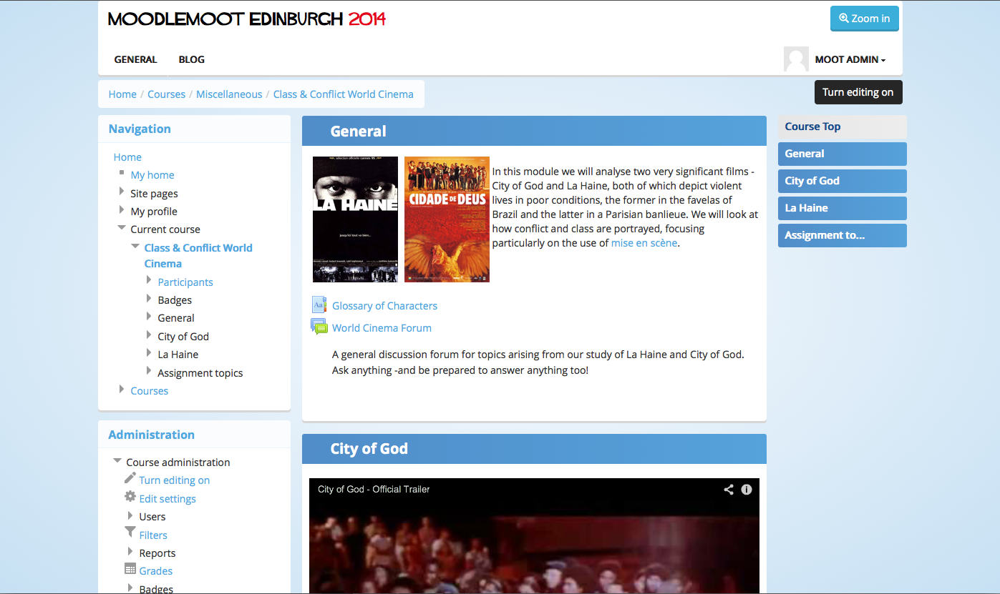
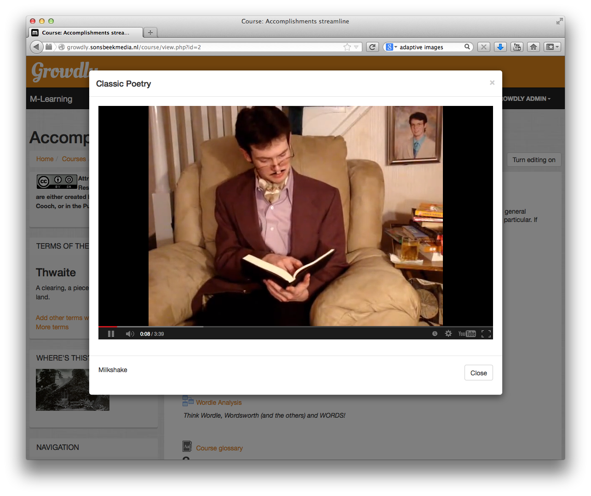
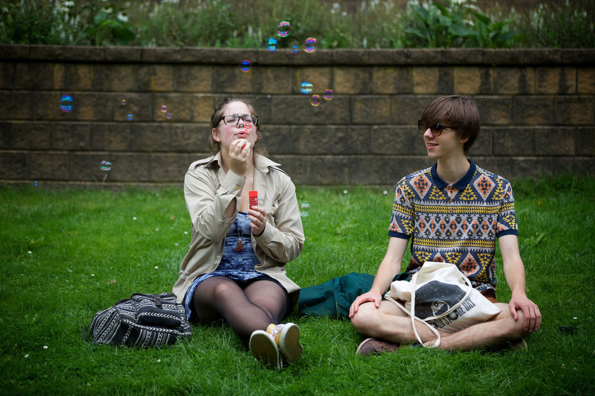

I'm a developer, designer and fulltime geek.
 Bas Brands, MoodleMoot, Edinburgh, 2014
Bas Brands, MoodleMoot, Edinburgh, 2014
What do we all have in common?
 Photo Credit: d_vdm cc
Photo Credit: d_vdm cc
You (often) interact differently on each device
- Your read texts on your mobile while traveling
- You write on you laptop
- You watch youtube on your tablet
- You game on your gaming console
Learners and their phones have a personal relationship
- Messaging friends
- Taking pictures
- Face to face calls
- Knowing where you are
Delivering Learning content on Mobiles.
- Use a Responsive theme
- Create a learning strategy
- Create a content strategy
- Design for Mobile first
- Test on your own devices
How the login page used to look on Moodle

How it looks using Bootstrap

Picture of @fat on twitter
Mark Otto on Youtube
Bootstrap and the Moodle Bootstrap theme
- The Bootstrap framework was built by @fat and @mdo
- David Scotson and myself developed the Moodle Bootstrap theme
- Then it got adopted into Moodle core (Bootstrapbase)
- And now it's going to be the default theme for Moodle
Moodle themes are simple.
 Moodle themeing factory
Moodle themeing factory
- Developers
- Testers
- Moodle HQ
- Github and the Moodle tracker
Github Octodex





Front end design inspiration
Momkai
Use simple techniques keeping the constraints of the user interface in mind.
- Messaging; Email, Sms
- Bite-size learning
- User participation in Forums
- Use a limited set of activities tested for mobiles
- Create a course yourself
- Friendly fonts / font rythms
- Do user testing

Content Strategie tips
- Remove blocks
- Keep images small / responsive
- Simplify navigation
- The scroll of joy!
- Mix text with media elements
The responsive images filter
 Photo Credit: marcoderksen
Photo Credit: marcoderksen

Photo Credit: Bas Boerman cc
 Photo Credit: tulensrma
Photo Credit: tulensrma